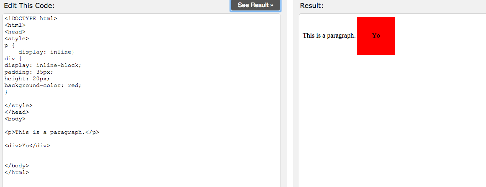
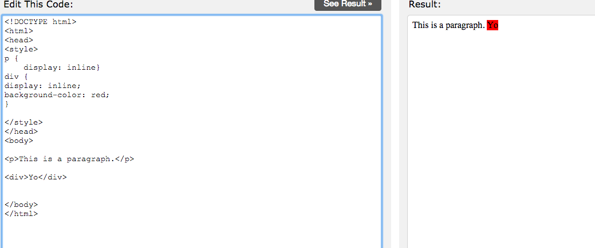

A typical website written in HTML (HyperText Markup Language) is made up of different elements. Each element - whether it’s a paragraph of text, a link to other web pages, a header, etc. - exists within its own rectangular box.
HTML is used to create all the elements for a website so, in effect, HTML code populates a site with different rectangular boxes. CSS is used to make sure all those boxes are positioned in a flattering and functional way. There are a lot of properties that determine how and where an element appears on a web page (like top, bottom, left, right, margin, to name a few). But this post focuses on the Display property, which affects how the actual box holding the element behaves. More specifically, I want to explain how the display value of “inline” differs from “inline-block” (“block” is another important display option, but I’m not covering it now).
To try and put it in non-technical terms, elements with an inline display are in boxes with unobtrusive and unoffensive qualities. With an inline display, an element can be located on the same line as other elements. Inline displays make it possible for elements to be on the same line, but for this to be possible, such boxes also have to make sacrifices: That’s why elements with inline displays cannot have a height and/or width specified by the author; it’s also why these elements only adhere to left and right margin specifications and not top/bottom ones.
Inline-block displays is a bit less welcoming and buddy-buddy to other boxes. While elements with this type of display can sit on the same line as other elements, it can have all of its margins/padding specified, as well as its height and width. This just means that a inline-block box has the potential to look very different and separate from the other elements on the same line. Whereas inline boxes fit in nicely alongside other boxes on the line, boxes of the inline-block variety can be assigned margin/padding/width/height values so different from other boxes on the lines that it’s disruptive.
One thing to note is that many HTML elements have pre-assigned display values. div and p, for example, are assigned a “block” display, whereas span, em and b have a default display of “inline.”
Check out the below screenshots. The first demonstrates how inline-block displays allow for elements to be on the same line as other elements and also have different margin/padding values. The next shows a more ‘neighborly’ box with an inline display.


To be fair, I’m just at the start of my programming life. Hat tip to these articles http://stackoverflow.com/questions/9189810/css-display-inline-vs-inline-block, http://css-tricks.com/almanac/properties/d/display/, for valuable information.